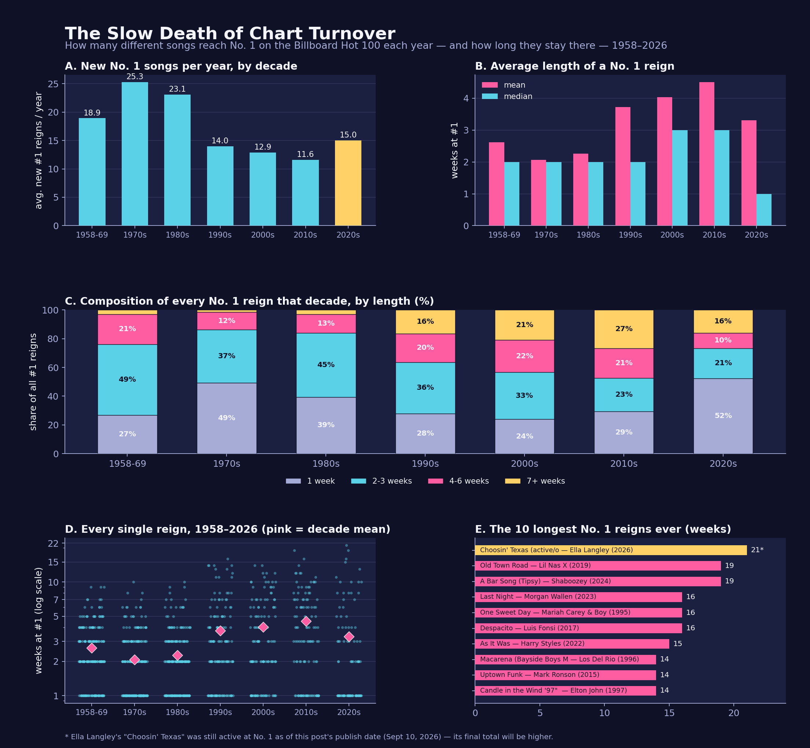
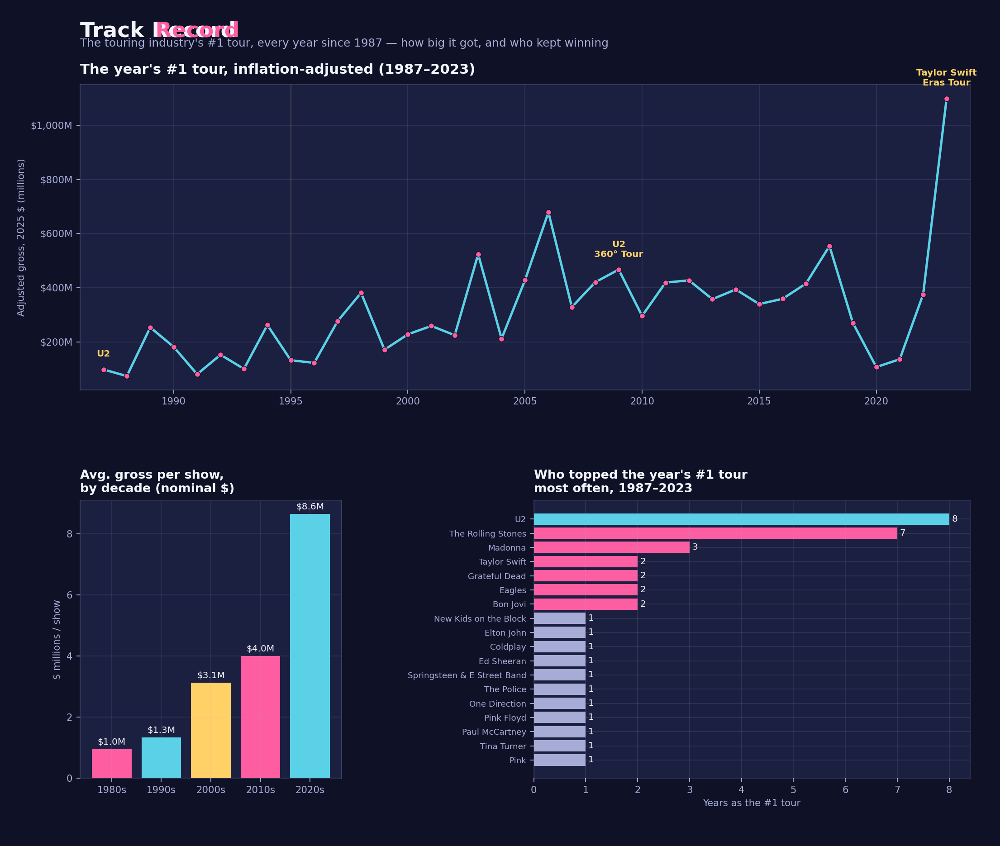
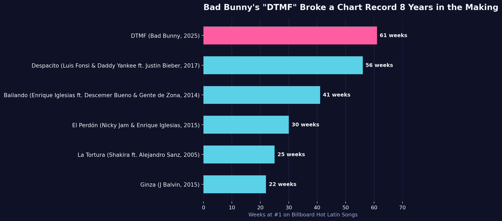
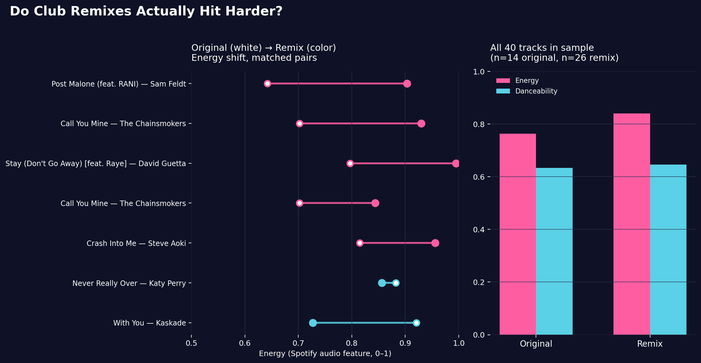

The Slow Death of Chart Turnover: Why No. 1 Hits Stick Around So Much Longer Than They Used To
Billboard No. 1 turnover has roughly halved since the 1970s — but the 2020s show a rebound driven by a new "barbell" of one-week flukes and months-long mega-hits.
Read the breakdown →
How Rare Is a One-Hit Wonder, Really?
Five decades of Billboard one-hit wonders, charted — and just how many of them barely cracked the Hot 100 at all.
Read the breakdown →
The Billion-Dollar Climb: How Touring's #1 Tour Grew 11x Since 1987
37 years of Billboard/Pollstar's "tour of the year," charted — plus who's won that title most often (hint: not Taylor Swift).
Read the breakdown →
DTMF Broke the Record — But Bad Bunny Got There Faster Than Anyone Ever Has
Bad Bunny hit 194 cumulative weeks at #1 in 7 years. Enrique Iglesias took 21 years to reach 189. All 44 of their #1 hits, charted.
Read the breakdown →
Do Club Remixes Actually Hit Harder?
A matched-pairs look at Spotify's energy score, original vs. remix, for the same songs.
Read the breakdown →Coming next: Charting Ca7riel & Paco Amoroso's Viral Tiny Desk
Their October 2024 NPR Tiny Desk turned the Argentine duo into a viral sensation, racking up tens of millions of YouTube views. Charting how it stacks up against the platform's most-watched sessions ever.